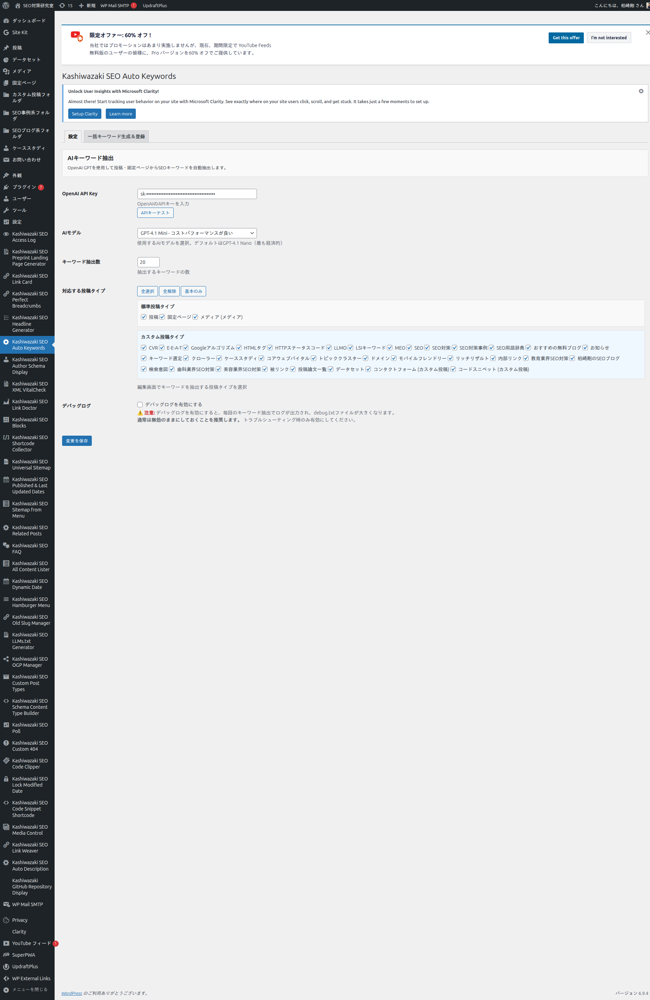
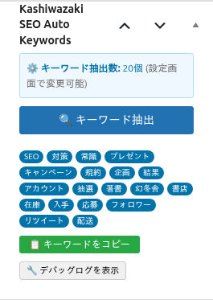

インストール・初期設定
プラグインのインストールから初期設定まで、ステップバイステップで解説します。
インストール手順
WordPress管理画面の「プラグイン」→「新規追加」→「プラグインのアップロード」からZIPファイルをアップロードします。
アップロード完了後、「プラグインを有効化」をクリックします。
有効化すると、WordPress管理画面の左メニューに「Auto Keywords」が表示されます。
設定画面は「設定」タブと「一括キーワード生成＆登録」タブの2タブ構成です。
設定画面

OpenAI APIキー設定
OpenAIの公式サイトでアカウントを作成します。
OpenAIダッシュボードからAPIキーを発行します。
発行したAPIキーをプラグイン設定画面の「OpenAI APIキー」欄に貼り付けます。
「接続テスト」ボタンをクリックして、APIキーが正しく設定されていることを確認します。
「設定を保存」ボタンをクリックして設定を保存します。
APIキーは外部に漏らさないでください。APIの利用には従量課金が発生します。
AIモデルの選択
| モデル | 特徴 | コスト |
|---|---|---|
| GPT-4.1 Nano | 最も経済的。基本的な品質 | 最低 |
| GPT-4.1 Mini | コストパフォーマンスが良い | 中 |
| GPT-4.1 | 高性能。最高品質 | 最高 |
デフォルトのGPT-4.1 Nanoで十分な品質。エラー時は自動的に他モデルへフォールバックします。
キーワード抽出数
1〜100個の範囲で設定できます（デフォルト: 10個）。記事の長さや目的に応じて調整してください。
対応する投稿タイプの選択
設定画面から、キーワード抽出の対象とする投稿タイプを選択できます。投稿・固定ページ・カスタム投稿タイプ・メディアに対応しています。
メタボックスの使い方

キーワードを抽出したい投稿の編集画面を開きます。
編集画面の右側または下部に「Auto Keywords」メタボックスが表示されます。
「🔍キーワード抽出」ボタンをクリックして、AIによるキーワード抽出を実行します。
抽出されたキーワードがタグ形式で表示されます。
「📋キーワードをコピー」ボタンをクリックして、抽出されたキーワードをクリップボードにコピーできます。
抽出されたキーワードはpost metaに保存されます。タグとして登録するには別途「タグ登録」操作が必要です（2ステップ方式）。